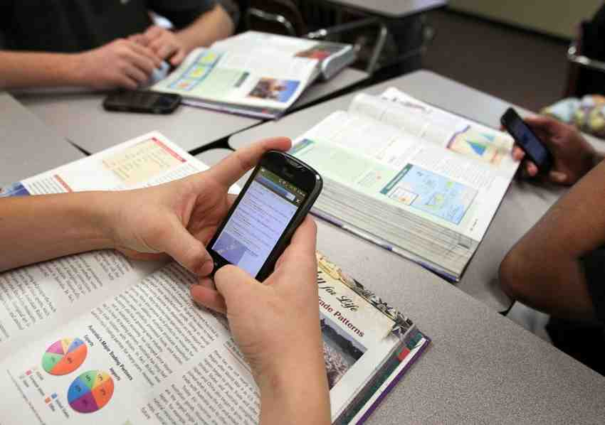

Las clases virtuales constituyen un reto para profesores, alumnos y padres de familia. En este contexto, muchos niños con problemas de concentración han presentado ciertas dificultades para desarrollarse adecuadamente en las sesiones no presenciales.
Durante las clases presenciales, estos estudiantes podían ser atendidos, mientras sus otros compañeros desarrollaban actividades de forma autónoma. Sin embargo, dice la educadora especialista en escolares de Primaria, en la virtualidad el niño no solo tiene los distractores del entorno, como los objetos de su casa, ruidos de la calle, televisión, conversaciones de la familia, etc. sino, además, todo lo que el dispositivo al que está conectado puede ofrecerle, lo cual obstaculiza más la atención y puede traer como consecuencia un bajo rendimiento escolar. Las ya conocidas Tecnologías de la Información y la Comunicación, entendidas como el conjunto de herramientas, soportes y canales para el acceso y el tratamiento de la información, permean los procesos educativos en distintas partes del mundo.
En las clases, los niños necesitan una mayor ayuda pues el aprendizaje empieza con la atención; sin ella, no hay comprensión y menos retención. Por esta razón, se sugiere a los docentes identificar quiénes son los alumnos con estos problemas y, luego, conversar con la familia para conocer si es que tienen un problema de atención o también de hiperactividad, pues puede darse el caso que aún no haya sido diagnosticado.